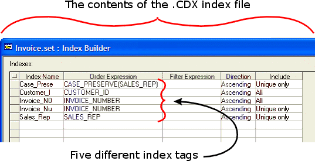

About Indexes, Queries, and Ranges
When to Uses Indexes and Queries
Indexes and queries make your program more efficient when you need to read records that have specific field values. Instead of reading each record and examining its field values to see they are interesting, the index or query list provides a pre-built list of the records you know you want to read.
Use an index when you are going to be repetitively looking for records using the same filter and order criteria.
Use an index when speed is important.
Use an index if multiple users may be updating the same table.
Use a query list when your filter or order criteria change frequently.
Use a query list when you are not concerned with other users or processes changing the data in your table.
Indexes
An index is an optional, but often desirable addition to a table. The index provides a fast way to find records in the table, by avoiding the necessity to individually examine record values until the desired records are found. In Alpha Five, the default or production index for a table has the base name of the table, plus the extension .CDX. For example, the mytable.dbf file would be accompanied by the mytable.cdx file.
 Note : Deleting an
index or modifying its definition has no effect on the data in your tables.
Note : Deleting an
index or modifying its definition has no effect on the data in your tables.
The index file may contain more than one index tag. Many developers are confused about the difference between the two. When Alpha Five uses an index, it looks inside the index file and uses one of its index tags, as specified by the developer. The index tag contains the information that orders, and optionally selects, the sequence records.

Tables can have index files. Sets cannot. When you specify an index tag for a set, as in the example above, you are actually specifying an index tag for one of the set's parent tables.
A table may have more than one .CDX index file, although they must have different filenames. This is uncommon in practice, because the maintenance of too many indexes will degrade application performance.
The Components of an Index Tag
As the image above suggests, an index tag has five components:
a name, which must be unique.
an order expression, which is required. The order expression can be the name of a field or any Xbasic expression that uses one or more field names and returns a value.
an optional filter expression. The filter expression causes the index tag to index some subset of the table's records. By default, an index tag selects all records in the table.
an optional direction. The default value is "Ascending". The other possible value is "Descending".
an optional include statement. The default value is "All". The other possible value is "Unique only".
Use either the TABLE.OPEN(),
TABLE.CURRENT(), TABLE.CREATE_END(),
or <OBJECT>.TABLE_GET()
methods to return the
|
Procedure |
Comment |
|
Adding an Index Tag to any Index File |
To add an index tag to any index file, you must either rebuild the entire index file in Xbasic (using the TABLE.INDEX_CREATE_BEGIN(), <TBL>.INDEX_GET(), and <TBL>.INDEX_CREATE_END() methods), or interactively, by right clicking on a table in the Control Panel and selecting the Define Indexes command. |
|
Adding an Index Tag to the Production Index File |
The <TBL>.INDEX_TAG_ADD()
method finds an existing index tag in the production index file for the
table referenced by |
|
Deleting an Index Tag |
The <INDEX>.DROP()
method deletes the index tag referenced by the |
|
Deleting the Production Index File |
Every time a table is opened, its production index (if it exists) is also automatically opened. If you wish to delete a table's production index using the FILE.REMOVE() method, you must first close the index file using the <INDEX>.CLOSE() method. |
|
Compacting an Index File |
To compact the size of the index file, you must either rebuild the entire index file in Xbasic (using the TABLE.INDEX_CREATE_BEGIN(), <TBL>.INDEX_GET(), and <TBL>.INDEX_CREATE_END() methods), or interactively, by right clicking on a table in the Control Panel and selecting the Define Indexes command. |
|
Updating the Index Tags in any Index File |
When an index file is closed, the index tags in the file are not updated when records are added or edited. When you subsequently re-open an index file, you will have to use the <INDEX>.UPDATE() method to update the index tags in the file. |
|
Updating the Index Tags in the Production Index File |
The <TBL>.UPDATE_PRODUCTION_INDEX()
method updates all of the indexes in the production index of the table
referenced by |
|
Get the Name of an Index Tag |
The <INDEX>.NAME_GET()
method returns the tag name of the index referenced by the |
|
Get the Name of the Index Tag's Table |
The <INDEX>.TABLE_GET()
method returns a |
|
Get the Order Expression for an Index Tag |
The <INDEX>.ORDER_GET()
method returns the order expression for the index referenced |
|
Get the Filter Expression for an Index Tag |
The <INDEX>.FILTER_GET()
method returns the filter expression f or
the index referenced by |
Queries are used for transient record ordering and selection operations. A query is similar to an index, but is a static snapshot that is not automatically maintained (refreshed) by Alpha Five. A query is based on the Query dot variable, which has the following properties:
Description (name)
Order
Filter (optional)
Options (optional, a combination of the direction and include attributes of an index tag)
However, there are important differences.
|
Indexes |
Queries |
|
All users who share a table have the same indexes. |
Each user creates their own queries. |
|
Exclusive access to the table is required to add an index. |
Exclusive access to the table is not required to build a query. |
|
The number of index tags is bounded by practical performance considerations but also cannot exceed 40. |
There are a maximum of 4 queries per table and 16 queries per database at any time. New queries take up one of the four slot positions, pushing one of the older temporary queries off the list of open query lists. |
|
Indexes are dynamic. They are updated when records are edited. Key values are always correctly sorted and records that do not satisfy index filters are removed from the index immediately. |
Queries are static. They are not updated when records are edited. After it is edited, a record that no longer satisfies the query filter remains in the query list. |
|
Indexes are stored in .CDX files, which you presumably want to keep. |
Queries are stored in .MPX files, which always can be deleted. |
|
Can use the <TBL>.FETCH_FIND() method to find records by key value. |
Can use the <TBL>.FETCH_FIND() method to find records by key value. |
Use the Query Builder to create a new query. From the Control Panel, click Operations > New > Query Records, select a table or set name, and click either Create Using Genie.
As with indexes, you can use the
Get the name of the query from the Operations tab of the Control Panel.
|
Procedure |
Comment |
|
Get the Order Expression from a Saved Query |
QUERY_ORDER_GET() returns the order expression from a named and saved query operation. |
|
Get the Filter Expression from a Saved Query |
QUERY_FILTER_GET() returns the filter expression from a named and saved query operation. |
|
Create a Query |
The <TBL>.QUERY_CREATE()
returns an
Alpha Five will only select a previously created query list if the query list is still up to date. It will be out of date if the table was edited after the query list was built. |
|
The A5_OPEN_DEFAULT_BROWSE() and A5_OPEN_DEFAULT_FORM() functions display the default browse and form for a table while optionally creating a named query. | |
|
Use a Query |
The <TBL>.QUERY_PRIMARY_PUT()
method runs a saved query for |
|
Update a Query |
The <TBL>.QUERIES_REOPEN() method closes, and then reopens and updates the table's query lists. |
|
Convert a Range into a Query |
The <TBL>.QUERY_FROM_RANGE() method converts the current range into a query. |
|
Delete a Query |
The <INDEX>.DROP()
method deletes the query specified by |
Ranges are cousins to Indexes and Queries. as the name implies, a range works with a set of records defined by the first and last key values in an index tag. Ranges are useful when you have a batch operation that processes selected records in a table. For example, assume that you want to process all of the records in the state of California. You could use the <TBL>.QUERY_CREATE() method to build a query list, but this could take some time. However, setting a range with "State" as the primary index and "CA" as the first and last key value will instantaneously select the subset of records that you want to process.
Here are the important differences between indexes and ranges.
|
Indexes |
Ranges |
|
All users who share a table have the same indexes. |
Each user creates their own ranges. |
|
Exclusive access to the table is required to add an index. |
Exclusive access to the table is not required to build a range. |
|
The number of index tags is bounded only by practical performance considerations. |
The number of ranges is unlimited. |
|
Indexes are stored in .CDX files. |
Old ranges are maintained in a run-time stack. You can retrieve them in the reverse order in which they were applied. |
|
Can use the <TBL>.FETCH_FIND() method to find records by key value. |
Can use the <TBL>.FETCH_FIND() method to find records by key value. |
For details about creating ranges please refer to <TBL>.RANGE_ADD().
|
Procedure |
Comment |
|
Create a Range |
The <TBL>.RANGE_ADD() method applies a range to a table. Only the records within the range are visible. |
|
Delete a Range |
The <TBL>.RANGE_DROP()
method removes the active range for the table referenced by |
|
Convert a Range into a Query |
The <TBL>.QUERY_FROM_RANGE() method converts the current range into a query. |
See Also
Using a Query to Find a Record, Using an Index to Find a Record, A Procedure for Building Complex Expressions, Overview: Functions and Expressions